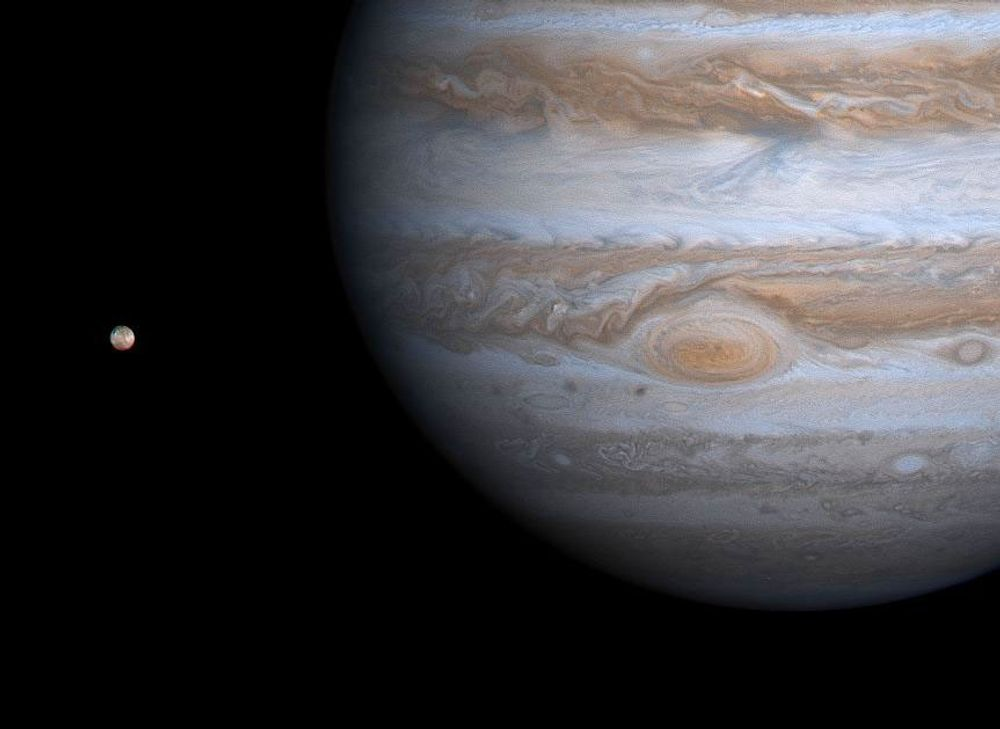
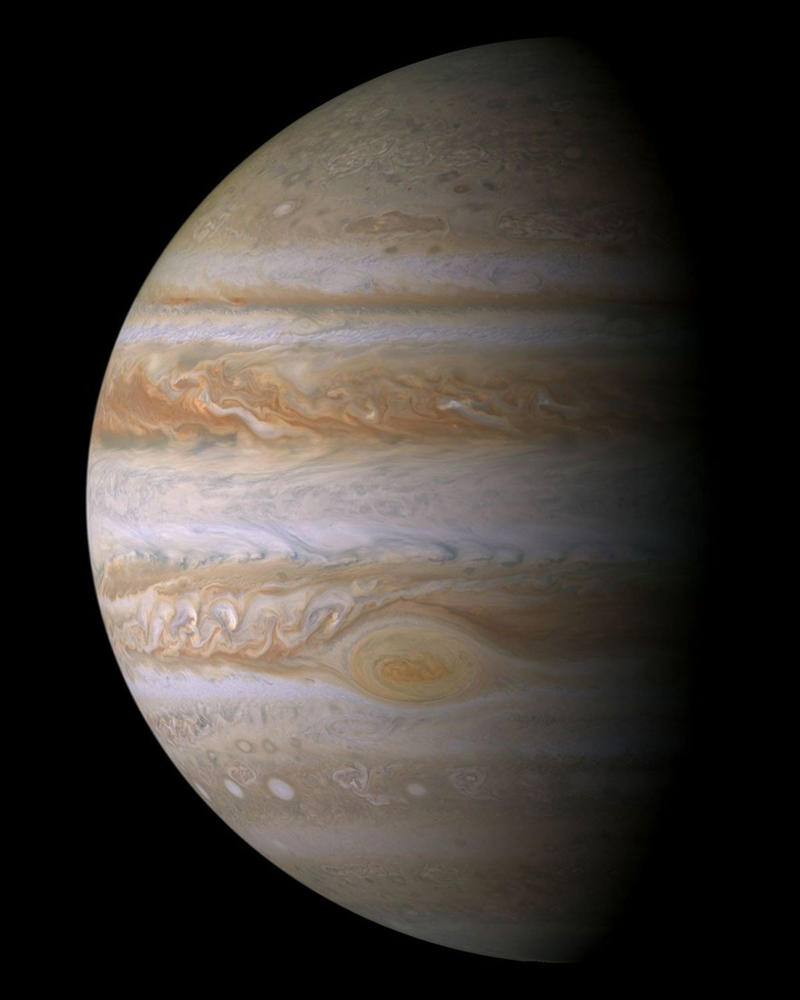
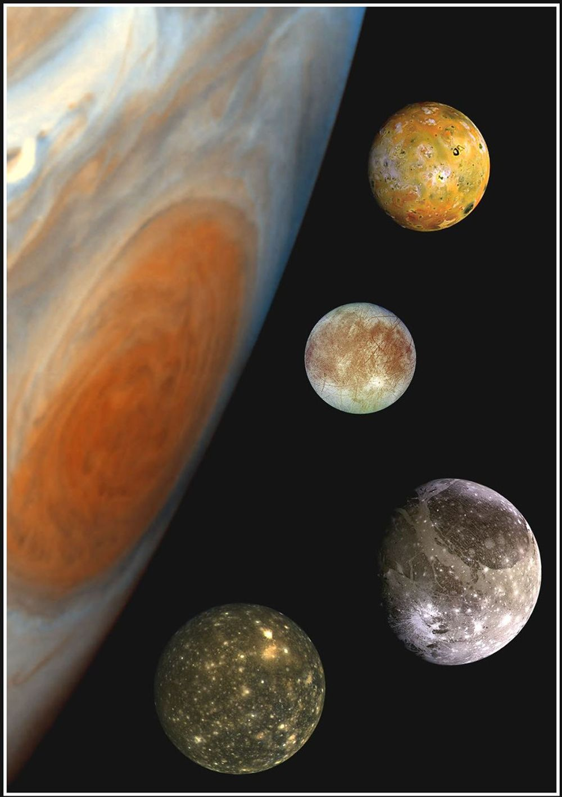
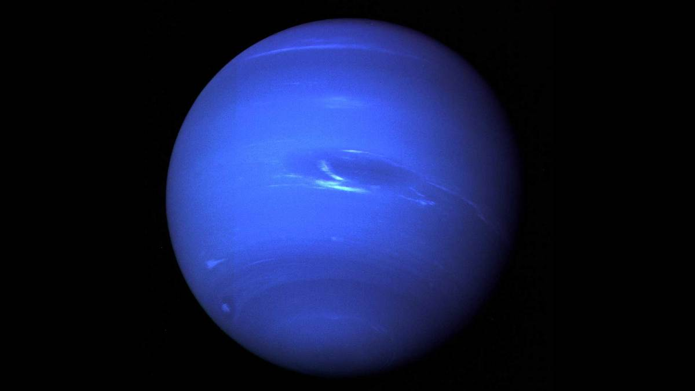
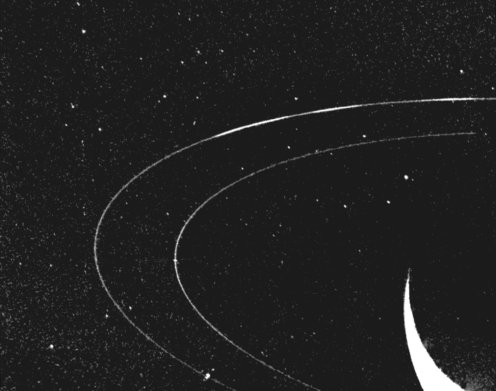
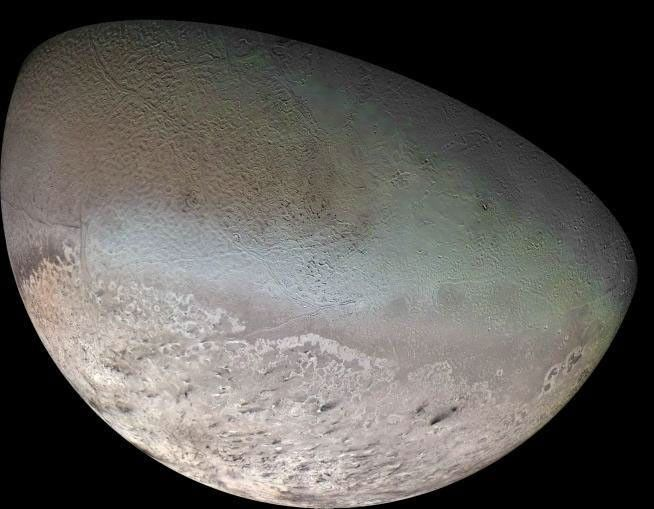

01 / THE GREAT RED SPOT
NASA/JPL/University of Arizona · 색 합성·대비 보정 ↗
멈추지 않는 소용돌이저 빨간 점은, 거대한 폭풍이야.
목성의 트레이드마크인 대적점은 거대한 폭풍이야. 구름 위에 찍힌 작은 점처럼 보여도, 지구보다 넓은 규모라니. 조금 다르게 보이지?
#대적점 #폭풍의행성사적인 우주 취향 수집소 VOL. 01
오늘의 취향은, 목성
멀리서 보면 그저 커다란 별 하나.
가까이 들여다보면 끝없이 소용돌이치는 세계.
내가 이 행성을 좋아하는 이유를 들려줄게.
SOLAR SYSTEM
05 / JUPITER

태양계에서 가장 큰 행성 ↗JUPITER 목성, 우리의 다섯 번째 이웃
실제 관측 사진 합성 · NASA/JPL/Space Science Institute ↗아주 큰 세계의
아주 짧은 소개 ↘
약 14만 km
지구 지름의 약 11배약 10 시간
덩치는 커도, 회전은 빠르게약 12 년
지구 시간으로 느긋한 한 해THINGS I LOVE ABOUT JUPITER
내가 목성에 빠진 세 가지 이유

멈추지 않는 소용돌이목성의 트레이드마크인 대적점은 거대한 폭풍이야. 구름 위에 찍힌 작은 점처럼 보여도, 지구보다 넓은 규모라니. 조금 다르게 보이지?
#대적점 #폭풍의행성목성은 대부분 수소와 헬륨으로 이루어진 가스 행성이야. 우리가 보는 줄무늬는 단단한 땅이 아니라, 서로 다른 방향으로 흐르는 구름 띠야.
#가스행성 #구름감상
혼자가 아닌 작은 우주화산으로 가득한 이오부터 얼음에 덮인 유로파까지. 목성의 위성들은 저마다 완전히 다른 표정을 하고 있어. 하나씩 알아가는 재미가 있지.
네 개의 위성 만나보기 ↗A LITTLE MOON WALK
1610년 갈릴레오가 관측한 네 개의 위성.
궁금한 달을 골라, 잠깐 산책해 봐.
01 / IO
태양계에서 화산 활동이 가장 활발한 천체야. 목성 등의 중력이 이오를 당기고 변형시키며 내부를 뜨겁게 해.
위성의 색과 크기는 이해를 돕기 위한 표현이야.작은 퀴즈 · 1 / 3
여기까지 함께 왔다면, 이제 너도 목성에 조금 진심일지도.
마음에 드는 답을 눌러 봐.
사적인 우주 취향 수집소 VOL. 02
다음의 취향은, 해왕성
목성을 지나, 태양계의 여덟 번째 행성으로.
멀리서도 시선을 붙잡는 푸른 세계.
이제 해왕성이 품은 재미를 들려줄게.
SOLAR SYSTEM
08 / NEPTUNE

태양에서 가장 먼 행성 ↗NEPTUNE 해왕성, 우리의 여덟 번째 이웃
NASA/JPL-Caltech · 관측 사진 합성·색 처리 ↗아주 먼 세계의
아주 짧은 소개 ↘
약 5만 km
지구 지름의 약 4배약 16 시간
지구보다 짧은 하루약 165 년
지구 시간으로 아주 긴 한 해THINGS I LOVE ABOUT NEPTUNE
내가 해왕성에 빠진 세 가지 이유
해왕성은 ‘얼음 거대 행성’으로 불려. 하지만 속까지 꽁꽁 언 건 아니야. 깊은 내부에는 물, 암모니아, 메탄 같은 물질이 뜨겁고 조밀한 유체 상태로 있을 것으로 생각돼.
#얼음거대행성 #반전매력
가만히 보면 보이는 고리토성만 고리를 가진 건 아니야. 해왕성에도 희미한 고리가 있어. 바깥쪽 고리에는 물질이 모여 유난히 밝게 보이는 ‘호’가 있어서 더 흥미롭지.
#숨은고리 #작은발견
자기만의 방향으로 도는 달해왕성의 가장 큰 위성 트리톤은 해왕성의 자전과 반대 방향으로 공전해. 남들과 다른 길을 도는 달이라니, 조금 더 알아보고 싶지 않아?
해왕성의 위성 만나보기 ↗A LITTLE MOON WALK
서로 다른 길을 여행하는 두 위성.
궁금한 달을 골라, 잠깐 산책해 봐.
01 / TRITON
해왕성에서 가장 큰 위성이야. 행성의 자전과 반대 방향으로 공전하고, 보이저 2호는 이 차가운 달에서 물질이 분출하는 모습도 관측했어.
NASA/JPL/USGS · 관측 사진 합성 · 표시 크기는 실제 비율과 달라. ↗작은 퀴즈 · 1 / 3
여기까지 왔다면, 해왕성도 조금 더 가깝게 느껴질 거야.
마음에 드는 답을 눌러 봐.
아는 만큼, 밤하늘이 조금 더 재미있어져.
다시 목성으로 ↑